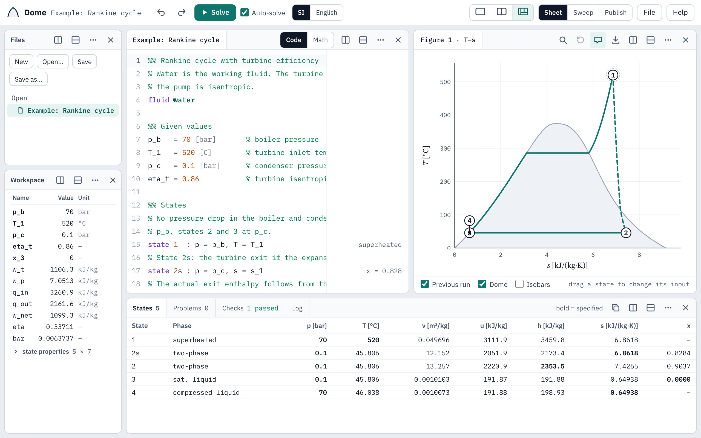

Dome manual
Dome is the thermodynamics workbench for ENES232. A sheet holds equations written as on paper; Dome solves them with fluid properties on the reference states of the Moran and Shapiro tables and draws property diagrams of the states the sheet defines.
Dome knows no particular problem. The sheet supplies the system, the states, the balances and the assumptions; Dome supplies the properties, solves the equations and reports each line it cannot use. The same sheet can be swept over a range of one input, published as a report, and exported to MATLAB, where the Dome toolbox computes the same properties.

Pages
- Installing and first launch Installing on macOS, Windows and Linux; the parts of the window; the Help menu; updates.
- Writing a sheet Equations, units, temperatures, comments and sections, checks, guesses, problems, the Math view, and the language reference.
- States and diagrams Fluids, state lines, property functions, the states table, diagrams, dragging a state, and the previous run.
- A complete cycle The Rankine cycle example from given values to the T–s diagram.
- Sweeps Running a sheet over a range of one input: sweep, record and plot lines, the slider, the chart and the table.
- Publishing and exporting Reports in PDF, HTML, LaTeX and MATLAB; figures; the states table; MATLAB scripts.
- The MATLAB toolbox Installing Dome.mltbx, the Getting Started guide and updates.
Other resources
- Download page: the installer for each system and the MATLAB toolbox.
- Getting started with the Dome toolbox: the MATLAB guide, with code and output for each part of the toolbox.
- In Dome, Help › Examples opens six complete sheets, and Help › Take the tour points out each part of the window.